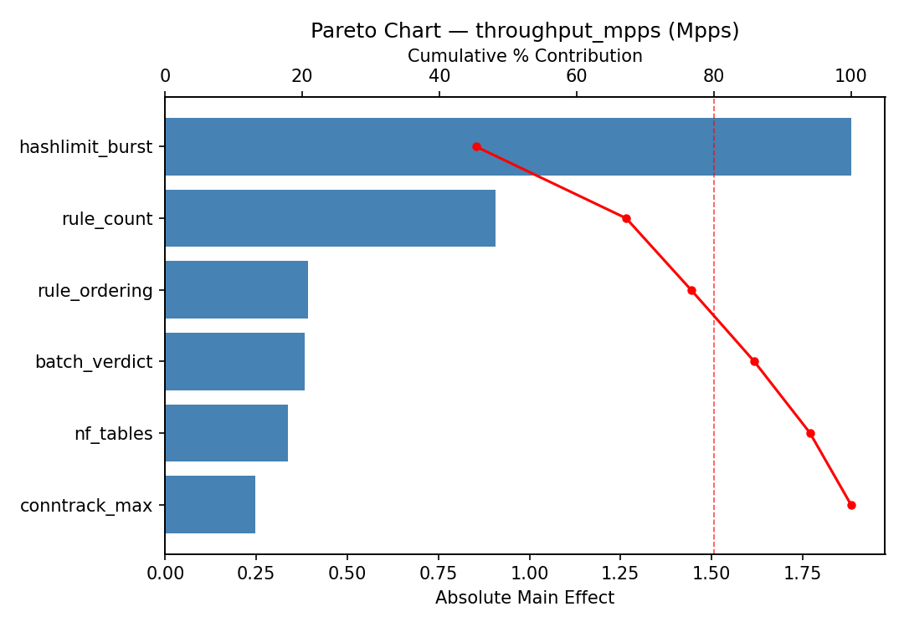
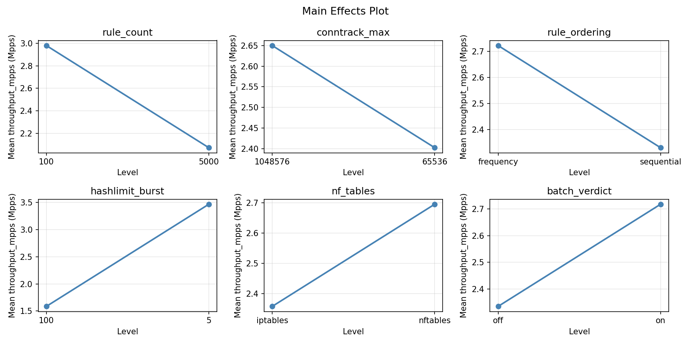
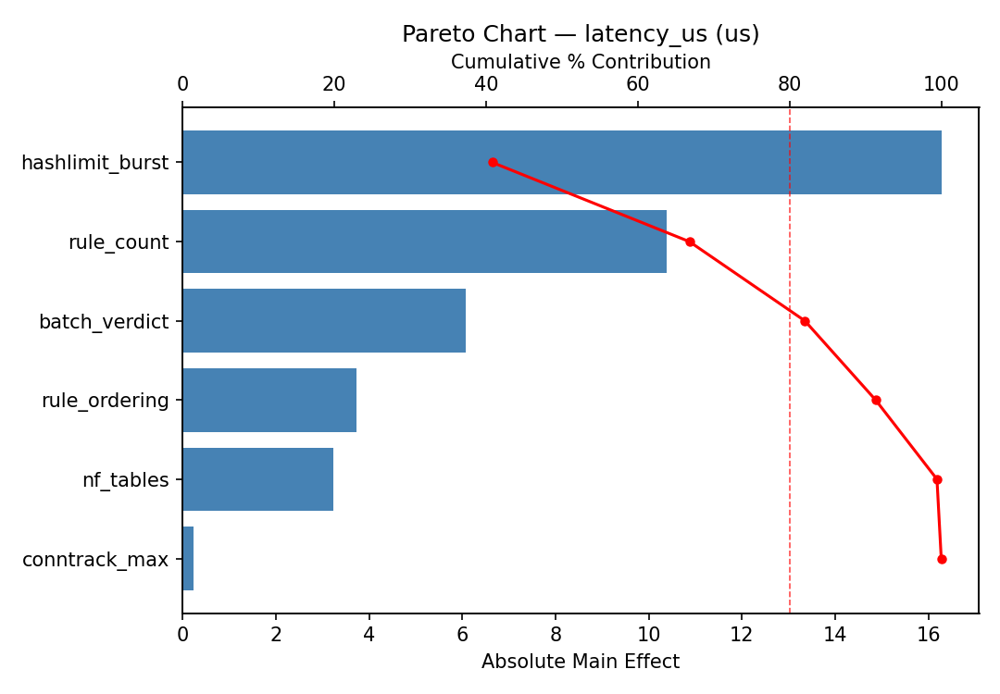
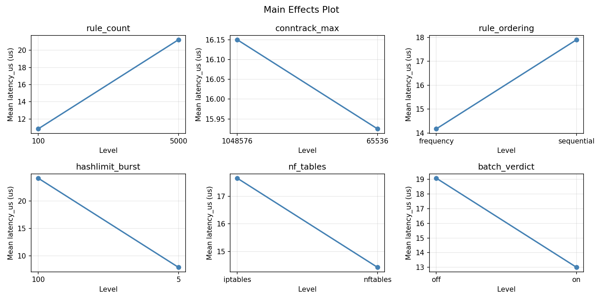
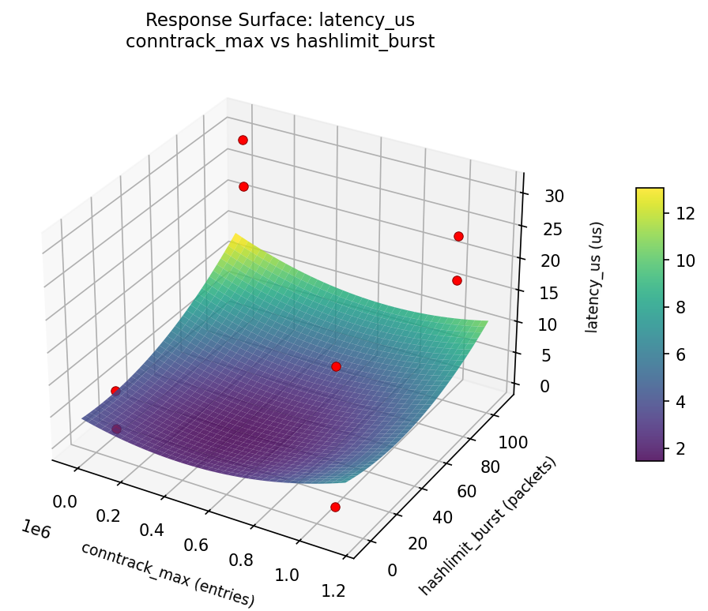
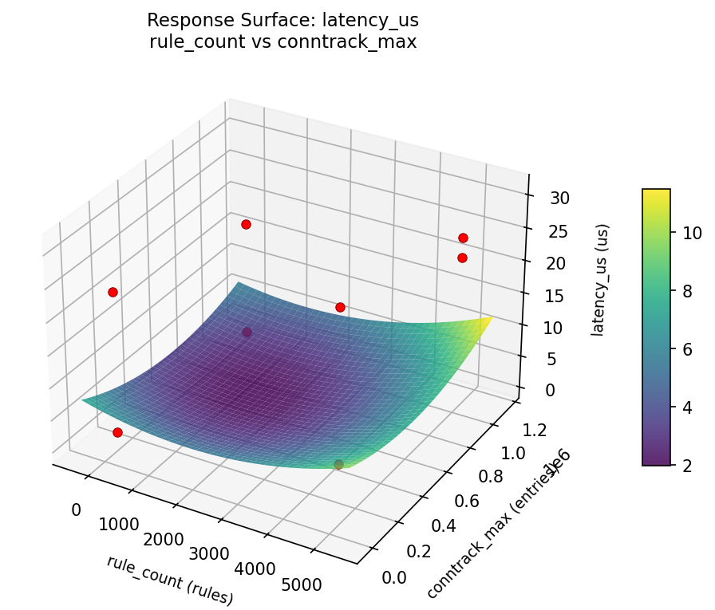
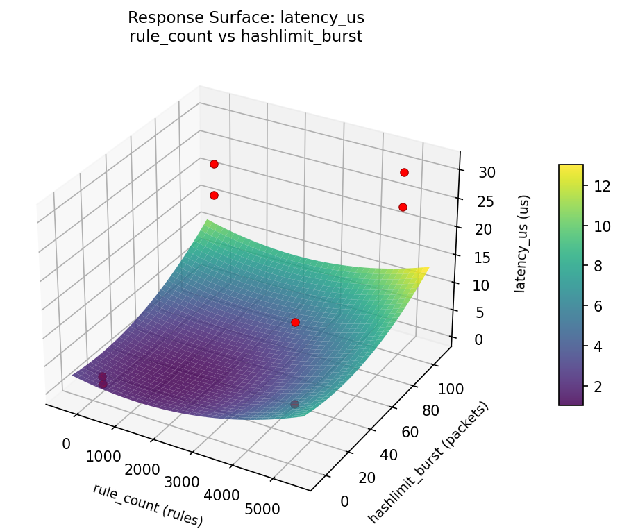
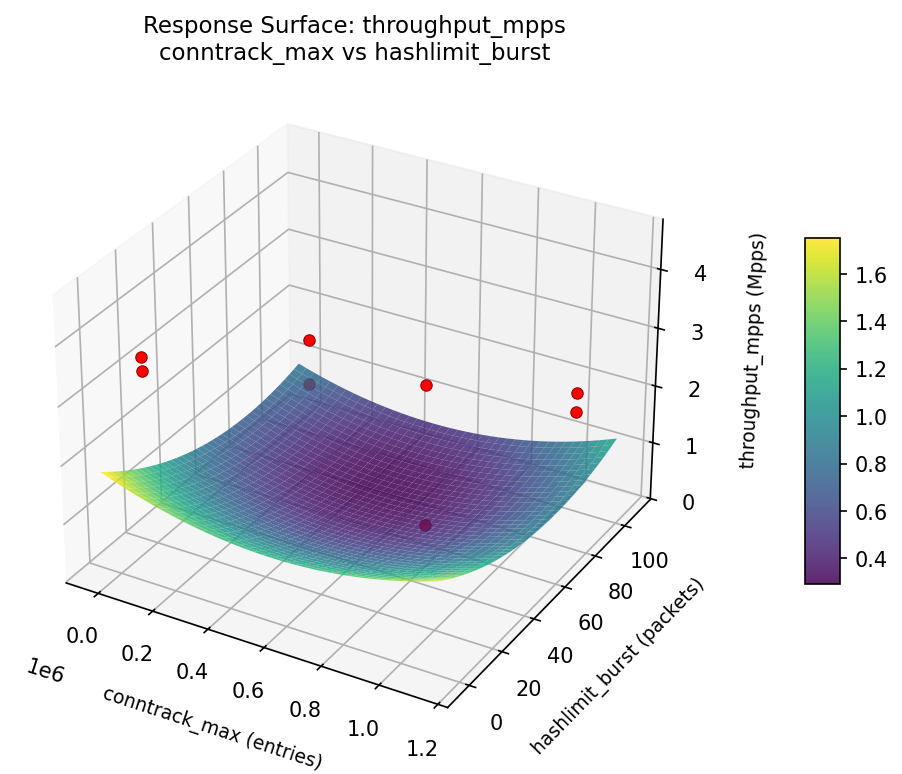
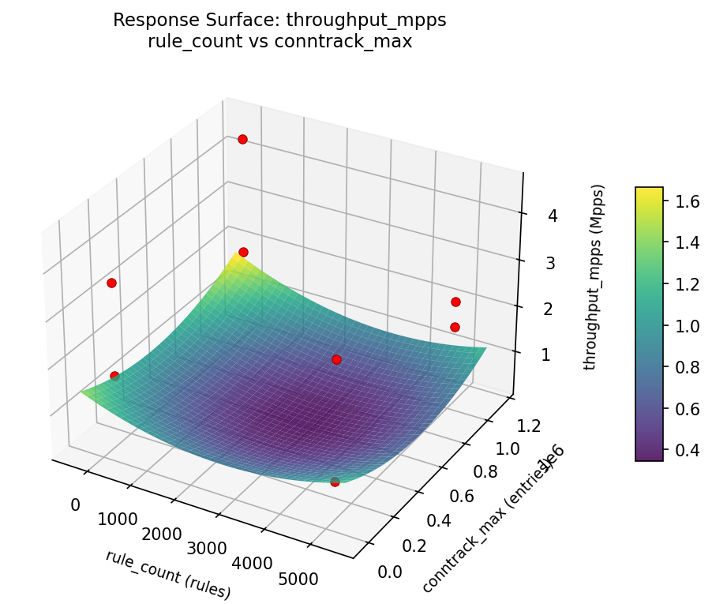
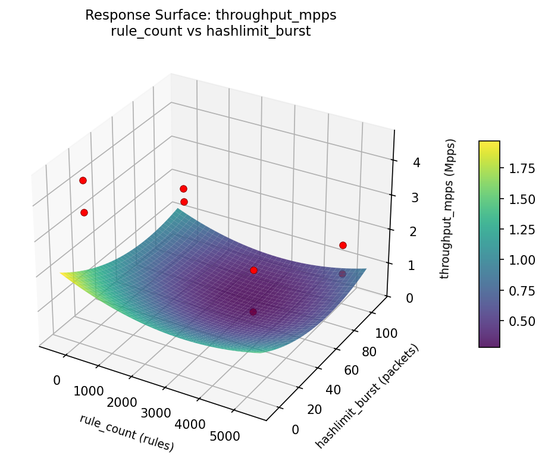

Summary
This experiment investigates firewall rule ordering. Plackett-Burman screening of 6 iptables/nftables parameters for packet processing throughput.
The design varies 6 factors: rule count (rules), ranging from 100 to 5000, conntrack max (entries), ranging from 65536 to 1048576, rule ordering, ranging from frequency to sequential, hashlimit burst (packets), ranging from 5 to 100, nf tables, ranging from iptables to nftables, and batch verdict, ranging from off to on. The goal is to optimize 2 responses: throughput mpps (Mpps) (maximize) and latency us (us) (minimize). Fixed conditions held constant across all runs include interface = eth0, protocol mix = 80_tcp_20_udp.
A Plackett-Burman screening design was used to efficiently test 6 factors in only 8 runs. This design assumes interactions are negligible and focuses on identifying the most influential main effects.
Key Findings
For throughput mpps, the most influential factors were rule count (35.2%), hashlimit burst (26.9%), rule ordering (18.3%). The best observed value was 4.53 (at rule count = 5000, conntrack max = 1048576, rule ordering = sequential).
For latency us, the most influential factors were rule count (37.2%), hashlimit burst (27.1%), rule ordering (16.3%). The best observed value was 0.4 (at rule count = 5000, conntrack max = 1048576, rule ordering = sequential).
Recommended Next Steps
- Follow up with a response surface design (CCD or Box-Behnken) on the top 3–4 factors to model curvature and find the true optimum.
- Consider whether any fixed factors should be varied in a future study.
- The screening results can guide factor reduction — drop factors contributing less than 5% and re-run with a smaller, more focused design.
Experimental Setup
Factors
| Factor | Low | High | Unit |
|---|
rule_count | 100 | 5000 | rules |
conntrack_max | 65536 | 1048576 | entries |
rule_ordering | frequency | sequential | |
hashlimit_burst | 5 | 100 | packets |
nf_tables | iptables | nftables | |
batch_verdict | off | on | |
Fixed: interface = eth0, protocol_mix = 80_tcp_20_udp
Responses
| Response | Direction | Unit |
|---|
throughput_mpps | ↑ maximize | Mpps |
latency_us | ↓ minimize | us |
Configuration
{
"metadata": {
"name": "Firewall Rule Ordering",
"description": "Plackett-Burman screening of 6 iptables/nftables parameters for packet processing throughput"
},
"factors": [
{
"name": "rule_count",
"levels": [
"100",
"5000"
],
"type": "continuous",
"unit": "rules"
},
{
"name": "conntrack_max",
"levels": [
"65536",
"1048576"
],
"type": "continuous",
"unit": "entries"
},
{
"name": "rule_ordering",
"levels": [
"frequency",
"sequential"
],
"type": "categorical",
"unit": ""
},
{
"name": "hashlimit_burst",
"levels": [
"5",
"100"
],
"type": "continuous",
"unit": "packets"
},
{
"name": "nf_tables",
"levels": [
"iptables",
"nftables"
],
"type": "categorical",
"unit": ""
},
{
"name": "batch_verdict",
"levels": [
"off",
"on"
],
"type": "categorical",
"unit": ""
}
],
"fixed_factors": {
"interface": "eth0",
"protocol_mix": "80_tcp_20_udp"
},
"responses": [
{
"name": "throughput_mpps",
"optimize": "maximize",
"unit": "Mpps"
},
{
"name": "latency_us",
"optimize": "minimize",
"unit": "us"
}
],
"settings": {
"operation": "plackett_burman",
"test_script": "use_cases/49_firewall_rule_ordering/sim.sh"
}
}
Experimental Matrix
The Plackett-Burman Design produces 8 runs. Each row is one experiment with specific factor settings.
| Run | rule_count | conntrack_max | rule_ordering | hashlimit_burst | nf_tables | batch_verdict |
|---|
| 1 | 5000 | 1048576 | sequential | 5 | iptables | off |
| 2 | 100 | 65536 | sequential | 100 | iptables | off |
| 3 | 100 | 1048576 | frequency | 100 | iptables | on |
| 4 | 5000 | 1048576 | sequential | 100 | nftables | on |
| 5 | 100 | 1048576 | frequency | 5 | nftables | off |
| 6 | 5000 | 65536 | frequency | 100 | nftables | off |
| 7 | 100 | 65536 | sequential | 5 | nftables | on |
| 8 | 5000 | 65536 | frequency | 5 | iptables | on |
Step-by-Step Workflow
1
Preview the design
$ python doe.py info --config use_cases/49_firewall_rule_ordering/config.json
2
Generate the runner script
$ python doe.py generate --config use_cases/49_firewall_rule_ordering/config.json \
--output use_cases/49_firewall_rule_ordering/results/run.sh --seed 42
3
Execute the experiments
$ bash use_cases/49_firewall_rule_ordering/results/run.sh
4
Analyze results
$ python doe.py analyze --config use_cases/49_firewall_rule_ordering/config.json
5
Get optimization recommendations
$ python doe.py optimize --config use_cases/49_firewall_rule_ordering/config.json
6
Multi-objective optimization
With 2 competing responses, use --multi to find the best compromise via Derringer–Suich desirability.
$ python doe.py optimize --config use_cases/49_firewall_rule_ordering/config.json --multi
7
Generate the HTML report
$ python doe.py report --config use_cases/49_firewall_rule_ordering/config.json \
--output use_cases/49_firewall_rule_ordering/results/report.html
Features Exercised
| Feature | Value |
|---|
| Design type | plackett_burman |
| Factor types | continuous (3), categorical (3) |
| Arg style | double-dash |
| Responses | 2 (throughput_mpps ↑, latency_us ↓) |
| Total runs | 8 |
Analysis Results
Generated from actual experiment runs using the DOE Helper Tool.
Response: throughput_mpps
Top factors: rule_count (35.2%), hashlimit_burst (26.9%), rule_ordering (18.3%).
Pareto Chart

Main Effects Plot

Response: latency_us
Top factors: rule_count (37.2%), hashlimit_burst (27.1%), rule_ordering (16.3%).
Pareto Chart

Main Effects Plot

Response Surface Plots
3D surfaces fitted with quadratic RSM. Red dots are observed data points.
latency us conntrack max vs hashlimit burst

latency us rule count vs conntrack max

latency us rule count vs hashlimit burst

throughput mpps conntrack max vs hashlimit burst

throughput mpps rule count vs conntrack max

throughput mpps rule count vs hashlimit burst

Multi-Objective Optimization
When responses compete, Derringer–Suich desirability finds the best compromise.
Each response is scaled to a 0–1 desirability, then combined via a weighted geometric mean.
Overall Desirability
D = 0.9906
Per-Response Desirability
| Response | Weight | Desirability | Predicted | Dir |
|---|
throughput_mpps |
1.5 |
|
4.65 0.9843 4.65 Mpps |
↑ |
latency_us |
1.0 |
|
-3.23 1.0000 -3.23 us |
↓ |
Recommended Settings
| Factor | Value |
|---|
rule_count | 4886 rules |
conntrack_max | 9.683e+05 entries |
rule_ordering | sequential |
hashlimit_burst | 6.108 packets |
nf_tables | nftables |
batch_verdict | off |
Source: from RSM model prediction
Trade-off Summary
Sacrifice = how much worse than single-objective best.
| Response | Predicted | Best Observed | Sacrifice |
|---|
latency_us | -3.23 | 0.40 | -3.63 |
Top 3 Runs by Desirability
| Run | D | Factor Settings |
|---|
| #3 | 0.8021 | rule_count=5000, conntrack_max=1048576, rule_ordering=sequential, hashlimit_burst=100, nf_tables=nftables, batch_verdict=on |
| #7 | 0.7012 | rule_count=100, conntrack_max=65536, rule_ordering=sequential, hashlimit_burst=5, nf_tables=nftables, batch_verdict=on |
Model Quality
| Response | R² | Type |
|---|
latency_us | 0.9691 | linear |
Full Multi-Objective Output
============================================================
MULTI-OBJECTIVE OPTIMIZATION
Method: Derringer-Suich Desirability Function
============================================================
Overall desirability: D = 0.9906
Response Weight Desirability Predicted Direction
---------------------------------------------------------------------
throughput_mpps 1.5 0.9843 4.65 Mpps ↑
latency_us 1.0 1.0000 -3.23 us ↓
Recommended settings:
rule_count = 4886 rules
conntrack_max = 9.683e+05 entries
rule_ordering = sequential
hashlimit_burst = 6.108 packets
nf_tables = nftables
batch_verdict = off
(from RSM model prediction)
Trade-off summary:
throughput_mpps: 4.65 (best observed: 4.53, sacrifice: -0.12)
latency_us: -3.23 (best observed: 0.40, sacrifice: -3.63)
Model quality:
throughput_mpps: R² = 0.9705 (linear)
latency_us: R² = 0.9691 (linear)
Top 3 observed runs by overall desirability:
1. Run #5 (D=0.9545): rule_count=5000, conntrack_max=1048576, rule_ordering=sequential, hashlimit_burst=5, nf_tables=iptables, batch_verdict=off
2. Run #3 (D=0.8021): rule_count=5000, conntrack_max=1048576, rule_ordering=sequential, hashlimit_burst=100, nf_tables=nftables, batch_verdict=on
3. Run #7 (D=0.7012): rule_count=100, conntrack_max=65536, rule_ordering=sequential, hashlimit_burst=5, nf_tables=nftables, batch_verdict=on
Full Analysis Output
=== Main Effects: throughput_mpps ===
Factor Effect Std Error % Contribution
--------------------------------------------------------------
rule_count 1.5825 0.4322 35.2%
hashlimit_burst -1.2075 0.4322 26.9%
rule_ordering 0.8225 0.4322 18.3%
conntrack_max -0.4925 0.4322 11.0%
nf_tables 0.3375 0.4322 7.5%
batch_verdict 0.0475 0.4322 1.1%
=== ANOVA Table: throughput_mpps ===
Source DF SS MS F p-value
-----------------------------------------------------------------------------
rule_count 1 5.0086 5.0086 7.171 0.0316
conntrack_max 1 0.4851 0.4851 0.695 0.4321
rule_ordering 1 1.3530 1.3530 1.937 0.2066
hashlimit_burst 1 2.9161 2.9161 4.175 0.0803
nf_tables 1 0.2278 0.2278 0.326 0.5858
batch_verdict 1 0.0045 0.0045 0.006 0.9382
rule_count*conntrack_max 1 1.3530 1.3530 1.937 0.2066
rule_count*rule_ordering 1 0.4851 0.4851 0.695 0.4321
rule_count*hashlimit_burst 1 0.2278 0.2278 0.326 0.5858
rule_count*nf_tables 1 2.9161 2.9161 4.175 0.0803
rule_count*batch_verdict 1 0.4656 0.4656 0.667 0.4411
conntrack_max*rule_ordering 1 5.0086 5.0086 7.171 0.0316
conntrack_max*hashlimit_burst 1 0.0045 0.0045 0.006 0.9382
conntrack_max*nf_tables 1 0.4656 0.4656 0.667 0.4411
conntrack_max*batch_verdict 1 2.9161 2.9161 4.175 0.0803
rule_ordering*hashlimit_burst 1 0.4656 0.4656 0.667 0.4411
rule_ordering*nf_tables 1 0.0045 0.0045 0.006 0.9382
rule_ordering*batch_verdict 1 0.2278 0.2278 0.326 0.5858
hashlimit_burst*nf_tables 1 5.0086 5.0086 7.171 0.0316
hashlimit_burst*batch_verdict 1 0.4851 0.4851 0.695 0.4321
nf_tables*batch_verdict 1 1.3530 1.3530 1.937 0.2066
Error (Lenth PSE) 7 4.8889 0.6984
Total 7 10.4608 1.4944
Note: Error estimated using Lenth's pseudo-standard-error (unreplicated design)
=== Interaction Effects: throughput_mpps ===
Factor A Factor B Interaction % Contribution
------------------------------------------------------------------------
conntrack_max rule_ordering -1.5825 15.2%
hashlimit_burst nf_tables -1.5825 15.2%
rule_count nf_tables 1.2075 11.6%
conntrack_max batch_verdict -1.2075 11.6%
rule_count conntrack_max -0.8225 7.9%
nf_tables batch_verdict 0.8225 7.9%
rule_count rule_ordering 0.4925 4.7%
hashlimit_burst batch_verdict -0.4925 4.7%
rule_count batch_verdict -0.4825 4.6%
conntrack_max nf_tables 0.4825 4.6%
rule_ordering hashlimit_burst 0.4825 4.6%
rule_count hashlimit_burst -0.3375 3.2%
rule_ordering batch_verdict 0.3375 3.2%
conntrack_max hashlimit_burst 0.0475 0.5%
rule_ordering nf_tables 0.0475 0.5%
=== Summary Statistics: throughput_mpps ===
rule_count:
Level N Mean Std Min Max
------------------------------------------------------------
100 4 1.7350 0.6183 0.8700 2.2700
5000 4 3.3175 1.1980 1.6700 4.5300
conntrack_max:
Level N Mean Std Min Max
------------------------------------------------------------
1048576 4 2.7725 1.5684 0.8700 4.5300
65536 4 2.2800 0.9302 1.6700 3.6500
rule_ordering:
Level N Mean Std Min Max
------------------------------------------------------------
frequency 4 2.1150 1.1731 0.8700 3.6500
sequential 4 2.9375 1.2883 1.7300 4.5300
hashlimit_burst:
Level N Mean Std Min Max
------------------------------------------------------------
100 4 3.1300 1.1681 2.0700 4.5300
5 4 1.9225 1.0725 0.8700 3.4200
nf_tables:
Level N Mean Std Min Max
------------------------------------------------------------
iptables 4 2.3575 0.7510 1.6700 3.4200
nftables 4 2.6950 1.6873 0.8700 4.5300
batch_verdict:
Level N Mean Std Min Max
------------------------------------------------------------
off 4 2.5025 1.2924 0.8700 3.6500
on 4 2.5500 1.3473 1.6700 4.5300
=== Main Effects: latency_us ===
Factor Effect Std Error % Contribution
--------------------------------------------------------------
rule_count -15.4250 4.0069 37.2%
hashlimit_burst 11.2250 4.0069 27.1%
rule_ordering -6.7750 4.0069 16.3%
nf_tables -3.2250 4.0069 7.8%
batch_verdict 3.0250 4.0069 7.3%
conntrack_max 1.7750 4.0069 4.3%
=== ANOVA Table: latency_us ===
Source DF SS MS F p-value
-----------------------------------------------------------------------------
rule_count 1 475.8613 475.8613 15.251 0.0059
conntrack_max 1 6.3013 6.3013 0.202 0.6667
rule_ordering 1 91.8013 91.8013 2.942 0.1300
hashlimit_burst 1 252.0012 252.0012 8.076 0.0250
nf_tables 1 20.8012 20.8012 0.667 0.4411
batch_verdict 1 18.3013 18.3013 0.587 0.4688
rule_count*conntrack_max 1 91.8012 91.8012 2.942 0.1300
rule_count*rule_ordering 1 6.3012 6.3012 0.202 0.6667
rule_count*hashlimit_burst 1 20.8013 20.8013 0.667 0.4411
rule_count*nf_tables 1 252.0013 252.0013 8.076 0.0250
rule_count*batch_verdict 1 34.0312 34.0312 1.091 0.3310
conntrack_max*rule_ordering 1 475.8613 475.8613 15.251 0.0059
conntrack_max*hashlimit_burst 1 18.3013 18.3013 0.587 0.4688
conntrack_max*nf_tables 1 34.0313 34.0313 1.091 0.3310
conntrack_max*batch_verdict 1 252.0012 252.0012 8.076 0.0250
rule_ordering*hashlimit_burst 1 34.0313 34.0313 1.091 0.3310
rule_ordering*nf_tables 1 18.3012 18.3012 0.587 0.4688
rule_ordering*batch_verdict 1 20.8012 20.8012 0.667 0.4411
hashlimit_burst*nf_tables 1 475.8613 475.8613 15.251 0.0059
hashlimit_burst*batch_verdict 1 6.3013 6.3013 0.202 0.6667
nf_tables*batch_verdict 1 91.8012 91.8012 2.942 0.1300
Error (Lenth PSE) 7 218.4131 31.2019
Total 7 899.0987 128.4427
Note: Error estimated using Lenth's pseudo-standard-error (unreplicated design)
=== Interaction Effects: latency_us ===
Factor A Factor B Interaction % Contribution
------------------------------------------------------------------------
conntrack_max rule_ordering 15.4250 16.2%
hashlimit_burst nf_tables 15.4250 16.2%
rule_count nf_tables -11.2250 11.8%
conntrack_max batch_verdict 11.2250 11.8%
rule_count conntrack_max 6.7750 7.1%
nf_tables batch_verdict -6.7750 7.1%
rule_count batch_verdict 4.1250 4.3%
conntrack_max nf_tables -4.1250 4.3%
rule_ordering hashlimit_burst -4.1250 4.3%
rule_count hashlimit_burst 3.2250 3.4%
rule_ordering batch_verdict -3.2250 3.4%
conntrack_max hashlimit_burst 3.0250 3.2%
rule_ordering nf_tables 3.0250 3.2%
rule_count rule_ordering -1.7750 1.9%
hashlimit_burst batch_verdict 1.7750 1.9%
=== Summary Statistics: latency_us ===
rule_count:
Level N Mean Std Min Max
------------------------------------------------------------
100 4 23.7500 5.4836 17.8000 30.8000
5000 4 8.3250 10.5361 0.4000 23.4000
conntrack_max:
Level N Mean Std Min Max
------------------------------------------------------------
1048576 4 15.1500 13.6735 0.4000 30.8000
65536 4 16.9250 10.5184 1.8000 24.7000
rule_ordering:
Level N Mean Std Min Max
------------------------------------------------------------
frequency 4 19.4250 12.3963 1.8000 30.8000
sequential 4 12.6500 10.7438 0.4000 24.7000
hashlimit_burst:
Level N Mean Std Min Max
------------------------------------------------------------
100 4 10.4250 10.8997 0.4000 21.7000
5 4 21.6500 9.8436 7.7000 30.8000
nf_tables:
Level N Mean Std Min Max
------------------------------------------------------------
iptables 4 17.6500 7.0354 7.7000 23.4000
nftables 4 14.4250 15.5971 0.4000 30.8000
batch_verdict:
Level N Mean Std Min Max
------------------------------------------------------------
off 4 14.5250 12.7031 1.8000 30.8000
on 4 17.5500 11.4991 0.4000 24.7000
Optimization Recommendations
=== Optimization: throughput_mpps ===
Direction: maximize
Best observed run: #5
rule_count = 5000
conntrack_max = 1048576
rule_ordering = sequential
hashlimit_burst = 100
nf_tables = nftables
batch_verdict = on
Value: 4.53
RSM Model (linear, R² = 0.9609, Adj R² = 0.7260):
Coefficients:
intercept +2.5263
rule_count +0.5187
conntrack_max +0.8912
rule_ordering +0.1538
hashlimit_burst +0.2463
nf_tables +0.1088
batch_verdict +0.3112
Predicted optimum (from linear model, at observed points):
rule_count = 5000
conntrack_max = 1048576
rule_ordering = sequential
hashlimit_burst = 100
nf_tables = nftables
batch_verdict = on
Predicted value: 4.7562
Surface optimum (via L-BFGS-B, linear model):
rule_count = 5000
conntrack_max = 1.04858e+06
rule_ordering = sequential
hashlimit_burst = 100
nf_tables = nftables
batch_verdict = on
Predicted value: 4.7562
Model quality: Excellent fit — surface predictions are reliable.
Factor importance:
1. conntrack_max (effect: -1.8, contribution: 40.0%)
2. rule_count (effect: 1.0, contribution: 23.3%)
3. batch_verdict (effect: 0.6, contribution: 14.0%)
4. hashlimit_burst (effect: -0.5, contribution: 11.0%)
5. rule_ordering (effect: 0.3, contribution: 6.9%)
6. nf_tables (effect: 0.2, contribution: 4.9%)
=== Optimization: latency_us ===
Direction: minimize
Best observed run: #5
rule_count = 5000
conntrack_max = 1048576
rule_ordering = sequential
hashlimit_burst = 100
nf_tables = nftables
batch_verdict = on
Value: 0.4
RSM Model (linear, R² = 0.9493, Adj R² = 0.6450):
Coefficients:
intercept +16.0375
rule_count -3.8875
conntrack_max -9.1125
rule_ordering -1.9375
hashlimit_burst -0.8875
nf_tables -0.2125
batch_verdict -1.9875
Predicted optimum (from linear model, at observed points):
rule_count = 100
conntrack_max = 65536
rule_ordering = sequential
hashlimit_burst = 100
nf_tables = iptables
batch_verdict = off
Predicted value: 28.4125
Surface optimum (via L-BFGS-B, linear model):
rule_count = 5000
conntrack_max = 1.04858e+06
rule_ordering = sequential
hashlimit_burst = 100
nf_tables = nftables
batch_verdict = on
Predicted value: -1.9875
Model quality: Excellent fit — surface predictions are reliable.
Factor importance:
1. conntrack_max (effect: 18.2, contribution: 50.6%)
2. rule_count (effect: -7.8, contribution: 21.6%)
3. batch_verdict (effect: -4.0, contribution: 11.0%)
4. rule_ordering (effect: -3.9, contribution: 10.7%)
5. hashlimit_burst (effect: 1.8, contribution: 4.9%)
6. nf_tables (effect: -0.4, contribution: 1.2%)